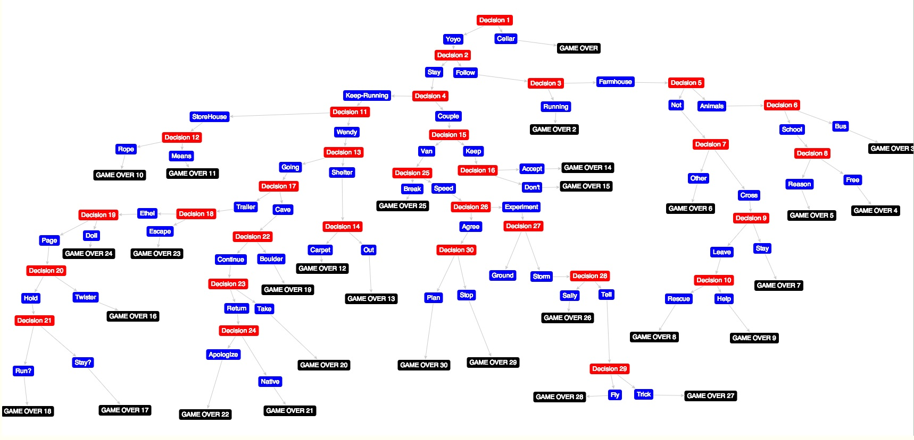
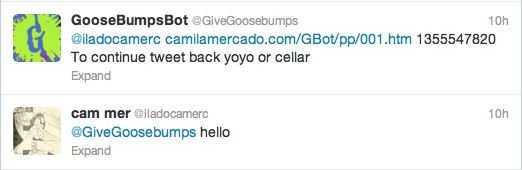

A make your own adventure TwitterBot powered by Node js
A Bot that uses Twitters API to let users recreate R.L Stine's "Give Yourself Goosebumps" series via Tweet.
By Tweeting @GiveGoosebumps, any twitter user can trigger an automatic response from the Bot prompting them to "Just tweet me hello and the game will begin!"
Once the user tweets (@GiveGoosebumps hello) The narrative initiates and they will receive the first part of the story:
@User http://camilamercado.com/GBot/pp/001.htm 1355579704 To continue tweet back yoyo or cellar
Each tweet contains a URL address where the user can read segments from the original Goose Bumps book to inform their next decision and continue the game:
@GiveGoosebumps yoyo
From here the narrative takes as many twists and turns as the GooseBumps book provides until some END is met, good or bad. At this point @GiveGoosebumps will respond:
@User http://camilamercado.com/GBot/pp/101.htm 1355579735 To continue tweet back startover
...
In order to develop the TwitterBot into its final stages many steps had to occur
Mapping out the Narrative. In order to get an idea for the structure of the text, testing was done on
http://arborjs.org/halfviz/#/house-of-danger
A site the convinientely enough was built to make interactive paths from data. Many examples of similar 'Make your own Adventure' type books had also been mapped out on the site. Here is an example of how the information was then organized:
Decision 1 Pg.3 {color:red, label:Decision 1}
Option 1A Pg.16 {color:blue, label: Yoyo}
Option 1B Pg.101 {color:blue, label: Cellar}
Decision 1 Pg.3 -> Option 1A Pg.16
Decision 1 Pg.3 ->Option 1B Pg.101
Option 1A Pg.16 ->Decision 2 Pg.82
Option 1B Pg.101 ->GAME OVER`1.
From this model, each decision gets accompanied by the page on which it occurs, a label that corresponds to the narrative, and the direction in which it continues. Once all of the decisions were painstakingly mapped out, the final product came like this:

Once all of the information had been taken down, it was time to reformat it in order to make a document the Bot could parse through, and progress the narrative.
page_0: {
url: 'http://camilamercado.com/GBot/pp/001.htm',
opts: "Hello",
decisions:[
{
page:1,
name:'Hello'
}
]
},
page_1: {
url: 'http://camilamercado.com/GBot/pp/001.htm',
opts: "yoyo or cellar",
decisions:[
{
page:16,
name:'YoYo'
},
{
page:101,
name:'Cellar'
}
]
},
The final format assigns page_#'s to the array, in order to catalogue each URL and name that corresponds to each decision so that the Bot can jump from one decision to the next, providing the story text in the URL.
Now that the Narrative had been mapped, it was time to start putting together the Bot. After much research, the decision was made to have the Bot run on Node.js because of its Real-Time capabilities, and a breadth of documentation of other projects of a similar nature. At this point I came across a similar Twitter Bot named @Synomat whose purpose was to automatically tweet synonyms to other users.
The creator of the Bot, Tom Boutell made a blog "Justjs" helping to explain his process and teach js.
https://github.com/boutell/justjs/tree/master/examples/synomat-1 http://justjs.com/posts/synomat-a-twitter-thesaurus-powered-by-node-js
Provided on the blog were the Github repositories, which where then forked over to create GooseBumpsBot. In order to run node, it must be downloaded from the internet. Once node was successfully installed, a
npm install
command was run from inside the justjs directory, in order to access the rest of the required repo's and documents.Starting from the top, Node documents give a directory of other docs needed to run the program:
var _ = require('underscore');
var options = require('./options.js');
var ntwitter = require('ntwitter');
var fs = require('fs');
Now working with Node.js it was time to register @GiveGoosebumps with the Twitter Developer system and get the Oauth keys from (options.js) registered to the Bot in order to fill out options.js- a document that would be required to run the bot:
module.exports = {
twitter: {
username: 'synomat',
consumer_key: 'xxxx',
consumer_secret: 'xxxx',
access_token_key: 'xxxx',
access_token_secret: 'xxxx'
}
};
Once the keys were filled out it was time to re-write the code to fit @GoosebumpsBot. Starting by requiring pages.js- the external document containing the story map. var current_page was set up to monitor the progression of the story as set up in the pages.js
var _ = require('underscore');
var options = require('./options.js');
var ntwitter = require('ntwitter');
var fs = require('fs');
var pages = require('./pages.js');
var tweeter = new ntwitter(options.twitter);
var http = require('http')
var me = options.twitter.username;
var currentPage = 'page_0';
From the Bot Function that was originally provided in the Justjs github, little was changed in its functionality except adding the current_page variable to move the tweets forward. Once The server identifies the credentials provided from options.js, the bot is ready to start listening for tweets.
function bot() {
tweeter.verifyCredentials(function (err, data) {
if (err) {
console.log("Credentials bad. Bummer. Go check that in dev.twitter.com.");
}
console.log("Verified credentials");
})
.stream('user', { track: options.twitter.username }, function(stream) {
// .stream('statuses/sample', function(stream) {
console.log("Listening to tweets");
stream.on('data', function (data) {
if (!data.user)
{
// Not a tweet. For example I've received a list of friend ids
// here for some reason
return;
}
var them = data.user.screen_name;
At this point the bot will begin to read through the tweet trying to find out if the content of the tweet (word), is equal to (decision.name) as provided in pages.js. If it is a match or (true) it will add the value of currentPage with decision.page and the story jumps ahead.
if (data.in_reply_to_screen_name.toLowerCase() === me.toLowerCase()) {
var result = data.text.match(/ (\w+)\s*$/);
if (result) {
var word = result[1].toLowerCase(),
isMatch=false;
console.log(pages[currentPage]);
_.each(pages[currentPage].decisions, function(decision, i){
console.log(decision);
if(word === decision.name.toLowerCase()){
isMatch=true;
currentPage = 'page_' + decision.page;
}
});
});
console.log('ok');
console.log(isMatch);
From here a lot of editing had to occur, to replace the thesaurus sourcing code of @Synomat, with the code needed to make @GiveGoosebumps.
var currentTime = Math.round(+new Date()/1000);
if(isMatch) {
// match
var replyText = pages[currentPage].url + ' ' + currentTime + ' ' + " To continue tweet back " + pages[currentPage].opts,
nextOpts = '';
console.log(replyText);
_.each(pages[currentPage].content, function(decision, i){
if(i>0) {
nextOpts += " or";
}
nextOpts = nextOpts + ' ' + decision.name;
});
replyText += nextOpts;
console.log(replyText);
reply(replyText);
In order to get around Twitters rules on spambots, a simple variable is made called currentTime, which gets called by the variable replyText every time the function is run and adds a different timestamp to every tweet run by the variable replyText. The body of reply text contains URL corresponding to the currentPage, the currentTime stamp, and a string that sources the new decision choices in the tweet text output.
} else {
}
} else {
reply("Just tweet me hello and the game will begin!");
}
}
function reply(msg)
{
tweeter.updateStatus("@" + them + " " + msg, function(err, data)
{
if (err)
{
console.log(err);
// Not a big deal if a tweet fails. We could log something interesting though.
}
});
}
});
In this code tweeter.updateStatus is run to output the message. @them becomes the initiating users twitter handle, and msg is the content of replyText.
stream.on('end', function (response) {
// Handle a disconnection
console.log('end event, listening again');
setTimeout(1000, listen);
});
stream.on('destroy', function (response) {
// Handle a 'silent' disconnection from Twitter, no end/error event fired
console.log('destroy event, listening again');
setTimeout(1000, listen);
});
});
}
var port = process.env.PORT || 8080;
http.createServer(function(req, res) {
req.addListener('end', function() {
res.end();
console.log('%s - %s', req.url, res.message);
});
}).listen(port);
The rest of the Document is set up to direct Node to the correct port to listen on and execute activity.
Now that the code was done, it was time to run the program through Terminal, directly through the computers server. To do this, the command was done to cd into the correct depository, and then run node.
node server.js
At this point the bot should console.log:
Listening to tweets Verified credentials
This means everything has worked up to this point, and the bot is ready to listen for tweets. When they come in the get logged as:
{ url: 'http://camilamercado.com/GBot/pp/001.htm', opts: 'Hello', decisions: [ { page: 1, name: 'Hello' } ] } { page: 1, name: 'Hello' } ok true http://camilamercado.com/GBot/pp/001.htm 1355579704 To continue tweet back yoyo or cellar
Looks like everything has worked, now its time to check if the message was posted by @GiveGoosebumps on Twitter.

It worked! Try it out @GiveGoosebumps
Shout out to Erin Sparling Joe Kendall
and of course
R.L STINE